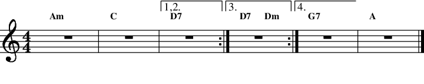

Next: Variables, Conditionals and Jumps Up: Reference Manual Previous: Volume and Dynamics
MMA attempts to be as comfortable to use as standard sheet music. This includes repeats and endings.
More complex structures like D.S., Coda, etc. are not directly supported. But, they are easily simulated with by using some simple variables, conditionals and GOTOs. See Variables for details. Often as not, it may be easier to use your editor to cut, paste and duplicate. Another, alternate, method of handling complicated repeats is to set sections of code in MSET (more here) variables and simply expand those.
A section of music to be repeated is indicated with a REPEAT and REPEATEND or ENDREPEAT.20.1 In addition, you can have REPEATENDINGS.
| Repeats | |
|

|
In this example MMA produces music with bars:
1, 2, 3,
1, 2, 3,
1, 2, 4,
1, 2, 5, 6
This works just like standard sheet music. Note that both REPEATENDING and REPEATEND can take an optional argument indicating the number of times to use the ending or to repeat the block. The effect of an optional count for REPEATENDING is illustrated in the example, above. The following simple example:
|
Repeat
1 Am 2 Cm RepeatEnd 3 |
Will expand to:
bars 1, 2,
bars 1, 2,
bars 1, 2
Note that the optional argument “3” produces a total of three copies. The default argument for REPEAT is “2”. Using “1” cancels the REPEAT and “0” deletes the entire section. Using “1” and “0” are useful in setting up Coda sections where you want a different count the second time the section is played. Note that the count argument can be a macro. Have a look at the sample file egs/misc/repeats.mma for lots of examples.
Combining optional counts with both REPEATENDING and REPEATEND is permitted. Another example:
|
Repeat
1 Am 2 C RepeatEnding 2 3 D7 RepeatEnd 2 |
Produces:
bars 1, 2, 3,
bars 1, 2, 3,
bars 1, 2,
bars 1, 2
MMA processes repeats by reading the input file and creating duplicates of the repeated material. This means that a directive in the repeated material would be processed multiple times. Unless you know what you are doing, directives should not be inserted in repeat sections. Be especially careful if you define a pattern inside a repeat. Using TEMPO with a “+” or “-” will be problematic as well.
Repeats can be nested to any level.
Some count values for REPEATEND or ENDREPEAT and REPEATENDING will generate a warning message. Using the optional text NoWarn as an argument will suppress the message:
|
Repeat
... RepeatEnd Nowarn 1 |
It's possible to use REPEAT for non-musical purposes. For example, this snippet would print a wonderful message to your screen ten times:
|
Repeat
Print MMA is the greatest! RepeatEnd 10 |
There must be one REPEATEND or ENDREPEAT for every REPEAT. Any number of REPEATENDINGs can be included before the REPEATEND.
You cannot use a GOTO jump out a a REPEAT.